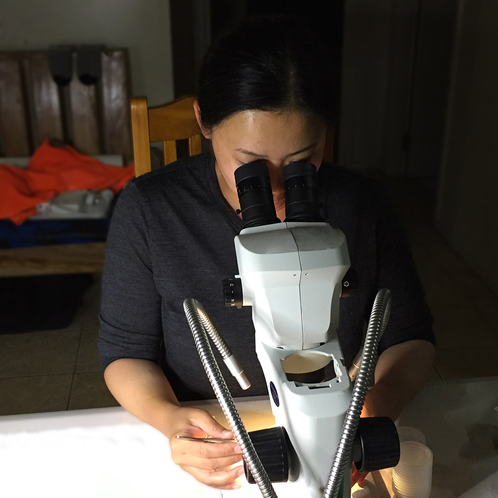
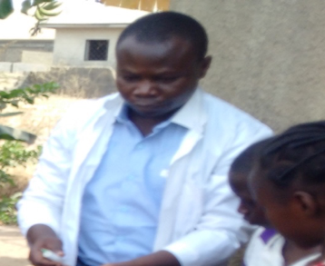
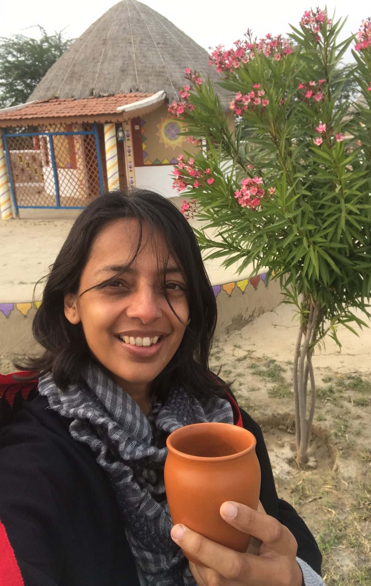

People at SpatialEpiLab
Members of our team a wealth of expertise owing to their diverse backgrounds in veterinary science, ecology, spatial epidemiology and mathematical modelling. We apply spatial epidemiology and risk mapping approaches for projects at interface between animal and human public health to develop a broader understanding of what mechanisms influence the geographical distributions of animal and human infections.
Ricardo Soares Magalhães

A/Prof Soares Magalhães recent publications
| Year | Title | Journal | Authors |
|---|---|---|---|
| 2021 | National Seroprevalence of Coxiella Burnetii in Chile, 2016–2017 | Pathogens | T Tapia, MF Olivares, J Stenos, et al |
| 2021 | The Application of Spectroscopy Techniques for Diagnosis of Malaria Parasites and Arboviruses and Surveillance of Mosquito Vectors: a Systematic Review and Critical Appraisal … | Plos Neglected Tropical Diseases | B Goh, K Ching, RJ Soares Magalhães, et al |
| 2021 | Levels, Trends, and Inequalities in using Institutional Delivery Services in Low-and Middle-Income Countries: a Stratified Analysis by Facility Type | Global Health: Science and Practice | MM Hasan, RJS Magalhaes, Y Fatima, et al |
| 2021 | The Association Between the Use of Oclacitinib and Antibacterial Therapy in Dogs with Allergic Dermatitis: a Retrospective Case-Control Study | Frontiers in Veterinary Science | H Rynhoud, J Gibson, E Meler, et al |
| 2021 | Geographical Variation and Temporal Trend in Anemia among Children 6-59 Months of Age in Low-and Middle-Income Countries During 2000-2018: Forecasting the 2030 Sdg Target | Public Health Nutrition | MM Hasan, RJS Magalhaes, S Ahmed, et al |
| 2021 | Effect of Endometrial Sampling Procedures on Subsequent Pregnancy Rate of Cattle | Animals | O Ramirez-Garzon, R Soares Magalhaes, N Satake, et al |
| 2021 | Geographical Variation in Coxiella Burnetii Seroprevalence in a Dairy Farm Located in South-Western Ethiopia: Understanding the Broader Community Risk | Pathogens | T Proboste, FB Deressa, Y Li, et al |
| 2021 | Double Burden of Malnutrition among Women of Reproductive Age in 55 Low-and Middle-Income Countries: Progress Achieved and Opportunities for Meeting the Global Target | European J of Clinical Nutrition | MM Hasan, S Ahmed, RJS Magalhaes, et al |
| 2021 | Epidemiology of Methicillin Resistant Staphylococcus Species Carriage in Companion Animals in the Greater Brisbane Area, Australia | Research in Veterinary Science | H Rynhoud, E Meler, JS Gibson, et al |
| 2021 | Perceptions of Dog Owners Towards Canine Gastrointestinal Parasitism and Associated Human Health Risk in Southeast Queensland | One Health | T Nguyen, N Clark, MK Jones, et al |
| 2021 | Molecular Epidemiology of Clinical and Colonising Methicillin-Resistant Staphylococcus Isolates in Companion Animals | Frontiers in Veterinary Science | H Rynhoud, BM Forde, SA Beatson, et al |
| 2020 | Double Burden of Underweight and Overweight among Women in South and Southeast Asia: a Systematic Review and Meta-Analysis | Advances in Nutrition | T Biswas, RJS Magalhaes, N Townsend, et al |
| 2020 | Patterns and Determinants of the Double Burden of Malnutrition at the Household Level in South and Southeast Asia | European J of Clinical Nutrition | T Biswas, N Townsend, RJS Magalhaes, et al |
| 2020 | Spatial Distribution of Leptospirosis Incidence in the Upper Yangtze and Pearl River Basin, China: Tools to Support Intervention and Elimination | Science of the Total Environment | PW Dhewantara, W Zhang, A Al Mamun, et al |
| 2020 | Meeting the Global Target in Reproductive, Maternal, Newborn, and Child Health Care Services in Low-and Middle-Income Countries | Global Health: Science and Practice | MM Hasan, RJS Magalhaes, S Ahmed, et al |
| 2020 | Coxiella Burnetii in the Environment: a Systematic Review and Critical Appraisal of Sampling Methods | Zoonoses and Public Health | AMH Abeykoon, NJ Clark, RJ Soares Magalhaes, et al |
| 2020 | Parasite Associations Predict Infection Risk: Incorporating Co-Infections in Predictive Models for Neglected Tropical Diseases | Parasites & Vectors | NJ Clark, K Owada, E Ruberanziza, et al |
| 2020 | Interim Guidance for Health-care Professionals and Administrators Providing Hospital Care to Adult Patients with Cognitive Impairment, in the Context of Covid-19 Pandemic | Australasian J on Ageing | M Martin-Khan, K Bail, MW Yates, et al |
| 2020 | Unravelling Animal Exposure Profiles of Human q Fever Cases in Queensland, Australia using Natural Language Processing | Transboundary and Emerging Diseases | NJ Clark, S Tozer, C Wood, et al |
| 2020 | Epidemiology of Soil-Transmitted Helminth Infections in Semarang, Central Java, Indonesia | Plos Neglected Tropical Diseases | J Kurscheid, B Laksono, MJ Park, et al |
| 2020 | Tb and Hiv Epidemiology and Collaborative Service: Evidence from Ethiopia, 2011–2015 | Hiv/Aids-Research and Palliative Care | YA Gelaw, Y Assefa, RJS Magalhaes, et al |
| 2020 | Seroprevalence of and Risk Factors for q Fever in Dairy and Slaughterhouse Cattle of Jimma Town, South Western Ethiopia | Bmc Veterinary Research | FB Deressa, DO Kal, BD Gelalcha, et al |
| 2020 | Conservation Epidemiology of Predators and Scavengers to Reduce Zoonotic Risk | The Lancet Planetary Health | CJ O’Bryan, AR Braczkowski, RJS Magalhães, et al |
| 2020 | Profiling the Public Health Risk of Canine Rabies Transmission in Kogi State, Nigeria | One Health | SS Okeme, GS Kia, PP Mshelbwala, et al |
| 2020 | Effect of Increased Influenza and Pneumococcal Vaccine Coverage on the Burden of Influenza among Elderly People in Hong Kong Versus Brisbane: Abridged Secondary Publication | Hong Kong Med j | L Yang, WB Hu, CM Wong, et al |
| 2020 | Covid-19 Propagation Prediction and Assessment Method with Imported Cases and Infection Generations: Shanxi Province as a Case | J Zhang, GQ Sun, M Li, et al | |
| 2020 | Environmental and Sociodemographic Risk Factors Associated with Environmentally Transmitted Zoonoses Hospitalisations in Queensland, Australia | One Health | J Cortes-Ramirez, D Vilcins, P Jagals, et al |
| 2020 | Dog Bite Emergency Department Presentations in Brisbane Metro South: Epidemiology and Exploratory Medical Geography for Targeted Interventions | One Health | A Pekin, H Rynhoud, B Brennan, et al |
| 2020 | Modelling the Impact of Maup on Environmental Drivers for Schistosoma Japonicum Prevalence | Parasites & Vectors | ALA Navas, F Osei, RJS Magalhães, et al |
| 2020 | Elective Caesarean Delivery Associated with Infant Hospitalisation for Intestinal but not Respiratory Infection | Maternal and Child Health J | KS Betts, RJS Magalhães, R Alati |
| 2020 | Geographical Variation in the Risk of H7n9 Human Infections in China: Implications for Risk-Based Surveillance | Scientific Reports | X Zhou, L Gao, Y Wang, et al |
| 2020 | Modelling the Impact of Maup on Environmental Drivers for Schistosoma Japonicum Prevalence. | Parasites & Vectors | AL Araujo Navas, F Osei, RJ Soares Magalhães, et al |
| 2020 | Interim Guidance for the Care of Adult Patients with Cognitive Impairment Requiring Hospital Care During the Covid-19 Pandemic in Australia | M Martin-Khan, A Argo, K Bail, et al | |
| 2020 | Environmental Recovery of Nosocomial Bacteria in a Companion Animal Shelter Before and after Infection Control Procedures | Frontiers in Veterinary Science | S Horsman, H Rynhoud, X Zhou, et al |
| 2019 | Hiv Prevalence among Tuberculosis Patients in Sub-Saharan Africa: a Systematic Review and Meta-Analysis | Aids and Behavior | YA Gelaw, G Williams, RJS Magalhães, et al |
| 2019 | Distribution of and Associated Factors for Dengue Burden in the State of Odisha, India During 2010–2016 | Infectious Diseases of Poverty | S Swain, M Bhatt, S Pati, et al |
| 2019 | Risk Factors for Dengue Outbreaks in Odisha, India: a Case-Control Study | J of Infection and Public Health | S Swain, M Bhatt, D Biswal, et al |
| 2019 | Mapping Soil-Transmitted Helminth Parasite Infection in Rwanda: Estimating Endemicity and Identifying at-Risk Populations | Tropical Medicine and Infectious Disease | E Ruberanziza, K Owada, NJ Clark, et al |
| 2019 | Effect of Temperature and Altitude Difference on Tuberculosis Notification: a Systematic Review | J of Global Infectious Diseases | YA Gelaw, W Yu, RJS Magalhães, et al |
| 2019 | Knowledge, Attitudes, and Practices Associated with Avian Influenza along the Live Chicken Market Chains in Eastern China: a Cross-sectional Survey in Shanghai, Anhui, and Jiangsu | Transboundary and Emerging Diseases | X Zhou, Y Zhang, C Shen, et al |
| 2019 | Comparison of Influenza Disease Burden in Older Populations of Hong Kong and Brisbane: The Impact of Influenza and Pneumococcal Vaccination | Bmc Infectious Diseases | L Yang, KP Chan, CM Wong, et al |
| 2019 | Spatial and Temporal Variation of Dengue Incidence in the Island of Bali, Indonesia: An Ecological Study | Travel Medicine and Infectious Disease | PW Dhewantara, R Marina, T Puspita, et al |
| 2019 | Climate Variability, Satellite-Derived Physical Environmental Data and Human Leptospirosis: a Retrospective Ecological Study in China | Environmental Research | PW Dhewantara, W Hu, W Zhang, et al |
| 2019 | Current Progress and Future Directions in the Double Burden of Malnutrition among Women in South and Southeast Asian Countries | Current Developments in Nutrition | T Biswas, N Townsend, RJS Magalhaes, et al |
| 2019 | Spatial Clustering and Socio-Demographic Determinants of Hiv Infection in Ethiopia, 2015–2017 | Int J of Infectious Diseases | YA Gelaw, RJS Magalhães, Y Assefa, et al |
| 2019 | Mapping Schistosoma Mansoni Endemicity in Rwanda: a Critical Assessment of Geographical Disparities Arising from Circulating Cathodic Antigen Versus Kato-Katz Diagnostics | Plos Neglected Tropical Diseases | NJ Clark, I Umulisa, E Ruberanziza, et al |
| 2019 | Identification of Microchip Implantation Events for Dogs and Cats in the Vetcompass Australia Database | Animals | P McGreevy, S Masters, L Richards, et al |
| 2019 | Sociodemographic Profiling of Tuberculosis Hotspots in Ethiopia, 2014–2017 | Transactions of the Royal Society of Tropical Medicine and Hygiene | YA Gelaw, G Williams, Y Assefa, et al |
| 2019 | Determinants of Spatial Heterogeneity of Functional Illiteracy among School-Aged Children in the Philippines: An Ecological Study | Int J of Environmental Research and Public Health | K Owada, M Nielsen, C Lau, et al |
| 2019 | The Impact of Expanded Brucellosis Surveillance in Beef Cattle on Human Brucellosis in Korea: An Interrupted Time-Series Analysis | Bmc Infectious Diseases | S Ryu, RJS Magalhães, BC Chun |
| 2019 | Geographical Distribution and Risk Factors for Echinococcus Granulosus Infection in Peri-Urban Wild Dog Populations | Int J for Parasitology: Parasites and Wildlife | L Harriott, M Gentle, R Traub, et al |
| 2019 | Modeling Schistosoma Japonicum Infection under Pure Specification Bias: Impact of Environmental Drivers of Infection | Int J of Environmental Research and Public Health | AL Araujo Navas, F Osei, LR Leonardo, et al |
| 2019 | Functional Illiteracy Burden in Soil-Transmitted Helminth (Sth) Endemic Regions of the Philippines: An Ecological Study and Geographical Prediction for 2017 | Plos Neglected Tropical Diseases | K Owada, M Nielsen, CL Lau, et al |
| 2019 | Disparities in the Prevalence of Malnutrition of Reproductive Women and under Five Children in Low-and Middle-Income Countries (P04-103-19) | Current Developments in Nutrition | MM Hasan, RJS Magalhaes, AA Mamun |
| 2019 | Districts of Hiv Clustering in Ethiopia: 2015-2017 | Transactions of the Royal Society of Tropical Medicine and Hygiene | YA Gelaw, RJS Magalhaes, Y Assefa, et al |
| 2019 | a Systematic Review and Critical Appraisal of the Quality of Studies Looking into the Economic Evaluation of Control Strategies for Soil-Transmitted Helminthiasis And … | Acta Medica Philippina | FB Garcia Jr, K Halton-Balcon, N Graves, et al |
| 2019 | Geographical Distribution of Human Leptospirosis Incidence in the Upper Yangtze and Pearl River Basin, China: Tools to Support Surveillance and Focused Intervention | American J of Tropical Medicine and Hygiene | PW Dhewantara, AA Mamun, W Zhang, et al |
| 2018 | Airborne Geographical Dispersal of q Fever from Livestock Holdings to Human Communities: a Systematic Review and Critical Appraisal of Evidence | Bmc Infectious Diseases | NJ Clark, RJS Magalhães |
| 2018 | a Systematic Literature Review and Critical Appraisal of Epidemiological Studies on Outdoor Air Pollution and Tuberculosis Outcomes | Environmental Research | I Popovic, RJS Magalhaes, E Ge, et al |
| 2018 | Labrador Retrievers under Primary Veterinary Care in the Uk: Demography, Mortality and Disorders | Canine Genetics and Epidemiology | PD McGreevy, BJ Wilson, CS Mansfield, et al |
| 2018 | Epidemiological Shift and Geographical Heterogeneity in the Burden of Leptospirosis in China | Infectious Diseases of Poverty | PW Dhewantara, AA Mamun, WY Zhang, et al |
| 2018 | Geographical and Temporal Distribution of the Residual Clusters of Human Leptospirosis in China, 2005–2016 | Scientific Reports | PW Dhewantara, A Al Mamun, WY Zhang, et al |
| 2018 | Spatiotemporal Patterns and Environmental Drivers of Human Echinococcoses over a Twenty-Year Period in Ningxia Hui Autonomous Region, China | Parasites & Vectors | AMC Restrepo, YR Yang, DP McManus, et al |
| 2018 | Epidemiology of Pseudorabies in Intensive Pig Farms in Shanghai, China: Herd-Level Prevalence and Risk Factors | Preventive Veterinary Medicine | L Xia, Q Sun, J Wang, et al |
| 2018 | Spatiotemporal Patterns and Environmental Drivers of Human Echinococcoses over a Twenty-Year Period in Ningxia Hui Autonomous Region, China | Parasites and Vectors | AM Cadavid Restrepo, YR Yang, DP McManus, et al |
| 2018 | Spatial Distribution and Populations at Risk of A. Lumbricoides and T. Trichiura Co-Infections and Infection Intensity Classes: An Ecological Study | Parasites & Vectors | K Owada, CL Lau, L Leonardo, et al |
| 2018 | Effectiveness of Market-Level Biosecurity at Reducing Exposure of Poultry and Humans to Avian Influenza: a Systematic Review and Meta-Analysis | The J of Infectious Diseases | X Zhou, Y Wang, H Liu, et al |
| 2018 | Spatial Epidemiological Approaches to Inform Leptospirosis Surveillance and Control: a Systematic Review and Critical Appraisal of Methods | Zoonoses and Public Health | PW Dhewantara, CL Lau, KJ Allan, et al |
| 2018 | Risk Factors for Recurrence of Fmd Outbreaks in Iran: a Case-Control Study in a Highly Endemic Area | Bmc Veterinary Research | K Ilbeigi, S Bokaie, S Aghasharif, et al |
| 2018 | The Extensive Networks of Frequent Population Mobility in the Samoan Islands and their Implications for Infectious Disease Transmission | Scientific Reports | Z Xu, CL Lau, X Zhou, et al |
| 2018 | Environmental Risk Factors and Changing Spatial Patterns of Human Seropositivity for Echinococcus Spp. in Xiji County, Ningxia Hui Autonomous Region, China | Parasites & Vectors | AMC Restrepo, YR Yang, DP McManus, et al |
| 2018 | Spatiotemporal Heterogeneity of Malnutrition Indicators in Children under 5 Years of Age in Bangladesh, 1999–2011 | Public Health Nutrition | MT Hasan, AA Mamun, GM Williams, et al |
| 2018 | Characteristics of Livestock Husbandry and Management Practice in the Central Dry Zone of Myanmar | Tropical Animal Health and Production | TTZ Win, A Campbell, RJS Magalhães, et al |
| 2018 | Spatial Prediction of the Risk of Exposure to Echinococcus Spp. among Schoolchildren and Dogs in Ningxia Hui Autonomous Region, People’s Republic of China | Geospatial Health | AMC Restrepo, YR Yang, DP McManus, et al |
| 2018 | Chronic Helminth Infection Perturbs the Gut-Brain Axis, Promotes Neuropathology and Alters Behaviour | The J of Infectious Diseases, Jiy | PR Giacomin, AK Kraeuter, EA Albornoz, et al |
| 2018 | The Role of Neonatal Pulmonary Morbidity in the Longitudinal Patterns of Hospitalisation for Respiratory Infection During the First Year of Life | Epidemiology & Infection | KS Betts, RJS Magalhães, R Alati |
| 2018 | Modelling Local Areas of Exposure to Schistosoma Japonicum in a Limited Survey Data Environment | Parasites & Vectors | ALA Navas, RJS Magalhães, F Osei, et al |
| 2017 | Gut Microbiota Disturbance During Helminth Infection: can it Affect Cognition and Behaviour of Children? | Bmc Infectious Diseases | V Guernier, B Brennan, L Yakob, et al |
| 2017 | Land Cover Change During a Period of Extensive Landscape Restoration in Ningxia Hui Autonomous Region, China | Science of the Total Environment | AMC Restrepo, YR Yang, NAS Hamm, et al |
| 2017 | Vetcompass Australia: a National Big Data Collection System for Veterinary Science | Animals | P McGreevy, P Thomson, NK Dhand, et al |
| 2017 | Countrywide Reassessment of Schistosoma Mansoni Infection in Burundi using a Urine-Circulating Cathodic Antigen Rapid Test: Informing the National Control Program | American J of Tropical Medicine and Hygiene | G Ortu, O Ndayishimiye, M Clements, et al |
| 2017 | Measuring the Effect of Soil-Transmitted Helminth Infections on Cognitive Function in Children: Systematic Review and Critical Appraisal of Evidence | Advances in Parasitology | K Owada, M Nielsen, CL Lau, et al |
| 2017 | Assessing the Social and Environmental Determinants of Pertussis Epidemics in Queensland, Australia: a Bayesian Spatio-Temporal Analysis | Epidemiology & Infection | X Huang, S Lambert, C Lau, et al |
| 2017 | Spatiotemporal Distribution and Population at Risk of Soil-Transmitted Helminth Infections Following an Eight-Year School-Based Deworming Programme in Burundi, 2007–2014 | Parasites & Vectors | M Assoum, G Ortu, MG Basáñez, et al |
| 2017 | Molecular Epidemiology and Pathology of Spirorchiid Infection in Green Sea Turtles (Chelonia Mydas) | Int J for Parasitology: Parasites and Wildlife | PA Chapman, H Owen, M Flint, et al |
| 2017 | Factors Influencing the Success of Aerial Rabies Vaccination of Foxes | Scientific Reports | J Henning, E Giorgi, RJS Magalhães, et al |
| 2017 | Economic Cost Estimation of Selected Strategies to Control Soil Transmitted Helminth Infections in the Philippines | Philippine J of Health Research and Development | FB Garcia Jr, K Halton, N Graves, et al |
Early Career Researchers
Nicholas Clark

R code for Dr Clark’s software programs can be found on his Github page.
Dr Clark's recent publications
| Year | Title | Journal | Authors |
|---|---|---|---|
| 2021 | Coxiella Burnetii in the Environment: a Systematic Review and Critical Appraisal of Sampling Methods | Zoonoses and Public Health | AMH Abeykoon, NJ Clark, RJ Soares Magalhaes, et al |
| 2021 | Perceptions of Dog Owners Towards Canine Gastrointestinal Parasitism and Associated Human Health Risk in Southeast Queensland | One Health | T Nguyen, N Clark, MK Jones, et al |
| 2020 | An Inverse Latitudinal Gradient in Infection Probability and Phylogenetic Diversity for Leucocytozoon Blood Parasites in New World Birds | J of Animal Ecology | A Fecchio, JA Bell, M Bosholn, et al |
| 2020 | Microbial Associations and Spatial Proximity Predict North American Moose (Alces Alces) Gastrointestinal Community Composition | J of Animal Ecology | NM Fountain-Jones, NJ Clark, AC Kinsley, et al |
| 2020 | Robust Geographical Determinants of Infection Prevalence and a Contrasting Latitudinal Diversity Gradient for Haemosporidian Parasites in Western Palearctic Birds | Molecular Ecology | NJ Clark, SV Drovetski, G Voelker |
| 2020 | Rapid Winter Warming Could Disrupt Coastal Marine Fish Community Structure | Nature Climate Change | NJ Clark, JT Kerry, CI Fraser |
| 2020 | Parasite Associations Predict Infection Risk: Incorporating Co-Infections in Predictive Models for Neglected Tropical Diseases | Parasites & Vectors | NJ Clark, K Owada, E Ruberanziza, et al |
| 2020 | Unravelling Animal Exposure Profiles of Human q Fever Cases in Queensland, Australia, using Natural Language Processing | Transboundary and Emerging Diseases | NJ Clark, S Tozer, C Wood, et al |
| 2020 | Genetic Analysis of Porcine Circovirus Type 2 (Pcv2) in Queensland, Australia | Australian Veterinary J | NK Mone, NJ Clark, M Kyaw-Tanner, et al |
| 2020 | Mriml: Multi-Response Interpretable Machine Learning to Map Genomic Landscapes | N Fountain-Jones, C Kozakiewicz, B Forester, et al | |
| 2019 | Climate Variation Influences Host Specificity in Avian Malaria Parasites | Ecology Letters | A Fecchio, K Wells, JA Bell, et al |
| 2019 | Out-of-Africa, Human-Mediated Dispersal of the Common Cat Flea, Ctenocephalides Felis: The Hitchhiker’s Guide to World Domination | Int J for Parasitology | AL Lawrence, CE Webb, NJ Clark, et al |
| 2019 | Synchronous Shedding of Multiple Bat Paramyxoviruses Coincides with Peak Periods of Hendra Virus Spillover | Emerging Microbes & Infections | AJ Peel, K Wells, J Giles, et al |
| 2019 | Host Specificity in Variable Environments | Trends in Parasitology | K Wells, NJ Clark |
| 2019 | Global Patterns in Helminth Host Specificity: Phylogenetic and Functional Diversity of Regional Host Species Pools Matter | Ecography | K Wells, DI Gibson, NJ Clark |
| 2019 | Mapping Soil-Transmitted Helminth Parasite Infection in Rwanda: Estimating Endemicity and Identifying at-Risk Populations | Tropical Medicine and Infectious Disease | E Ruberanziza, K Owada, NJ Clark, et al |
| 2019 | Mapping Schistosoma Mansoni Endemicity in Rwanda: a Critical Assessment of Geographical Disparities Arising from Circulating Cathodic Antigen Versus Kato-Katz … | Plos Neglected Tropical Diseases | NJ Clark, I Umulisa, E Ruberanziza, et al |
| 2019 | Commensal Bacterial Sharing Does not Predict Host Social Associations in Kangaroos | J of Animal Ecology | T Proboste, P Corvalan, N Clark, et al |
| 2018 | Parasite Spread at the Domestic Animal-Wildlife Interface: Anthropogenic Habitat Use, Phylogeny and Body Mass Drive Risk of Cat and Dog Flea (Ctenocephalides Spp.) Infestation … | Parasites & Vectors | NJ Clark, JM Seddon, J Šlapeta, et al |
| 2018 | Climate, Host Phylogeny and the Connectivity of Host Communities Govern Regional Parasite Assembly | Diversity and Distributions | NJ Clark, SM Clegg, K Sam, et al |
| 2018 | Airborne Geographical Dispersal of q Fever from Livestock Holdings to Human Communities: a Systematic Review and Critical Appraisal of Evidence | Bmc Infectious Diseases | NJ Clark, RJS Magalhães |
| 2018 | Global Spread of Helminth Parasites at the Human–domestic Animal–wildlife Interface | Global Change Biology | K Wells, DI Gibson, NJ Clark, et al |
| 2018 | Phylogenetic Uniqueness, not Latitude, Explains the Diversity of Avian Blood Parasite Communities Worldwide | Global Ecology and Biogeography | NJ Clark |
| 2018 | Unravelling Changing Interspecific Interactions Across Environmental Gradients using Markov Random Fields | Ecology | NJ Clark, K Wells, O Lindberg |
| 2018 | Emergence of Canine Parvovirus Subtype 2b (Cpv-2b) Infections in Australian Dogs | Infection, Genetics and Evolution | NJ Clark, JM Seddon, M Kyaw-Tanner, et al |
| 2018 | Mrfcov: Markov Random Fields with Additional Covariates | r Package Version | NJ Clark, K Wells, O Lindberg |
| 2017 | Integrating Phylogenetic and Ecological Distances Reveals New Insights into Parasite Host Specificity | Molecular Ecology | NJ Clark, SM Clegg |
| 2017 | a New Look at the Origins of Gibbon Ape Leukemia Virus | Virus Genes | J McKee, N Clark, F Shapter, et al |
Javier Cortes Ramirez

Dr Ramirez's recent publications
| Year | Title | Journal | Authors |
|---|---|---|---|
| 2021 | Early Environmental Exposures and Life-Long Risk of Chronic Non-Respiratory Disease | Paediatric Respiratory Reviews | D Vilcins, J Cortes-Ramirez, D Currie, et al |
| 2021 | Environmental and Sociodemographic Risk Factors Associated with Environmentally Transmitted Zoonoses Hospitalisations in Queensland, Australia | One Health | J Cortes-Ramirez, D Vilcins, P Jagals, et al |
| 2021 | Environmental Risk Factors Associated with Respiratory Diseases in Children with Socioeconomic Disadvantage | Heliyon | J Cortes-Ramirez, JD Wilches-Vega, OM Paris-Pineda, et al |
| 2020 | a Brief-Review of the Risk Factors for Covid-19 Severity | Revista De Saude Publica | JE Rod, O Oviedo-Trespalacios, J Cortes-Ramirez |
| 2020 | Risk of Zoonoses Hospitalisation in Queensland Local Government Areas | Queensland University of Technology | RSM Javier Cortes-Ramirez, Dwan Vilcins, Paul Jagals |
| 2019 | Collaboration Across Boundaries in the Amazon | Science (New York, Ny) | PR Prist, N Levin, JP Metzger, et al |
| 2019 | using Human Epidemiological Analyses to Support the Assessment of the Impacts of Coal Mining on Health | Reviews on Environmental Health | J Cortes-Ramirez, PD Sly, J Ng, et al |
| 2019 | Incorporating Epidemiological Studies into Integrated Environmental Health Impact Assessment of Coal Mining | University of Queensland | JC Ramirez |
| 2018 | Mortality and Morbidity in Populations in the Vicinity of Coal Mining: a Systematic Review | Bmc Public Health | J Cortes-Ramirez, S Naish, PD Sly, et al |
| 2018 | International Classification of Diseases Codes of Morbidity and Mortality in Populations in the Vicinity of Coal Mining | Isee Conference Abstracts | J Cortes-Ramirez, S Naish, P Jagals |
Kei Owada

Tatiana Proboste
Dr Proboste's recent publications
| Year | Title | Journal | Authors |
|---|---|---|---|
| 2021 | Geographical Variation in Coxiella Burnetii Seroprevalence in a Dairy Farm Located in South-Western Ethiopia: Understanding the Broader Community Risk | Pathogens | T Proboste, FB Deressa, Y Li, et al |
| 2019 | Commensal Bacterial Sharing Does not Predict Host Social Associations in Kangaroos | J of Animal Ecology | T Proboste, P Corvalan, N Clark, et al |
| 2017 | Drivers of Bartonella Infection in Micromammals and their Fleas in a Mediterranean Peri-Urban Area | Veterinary Microbiology | A Cevidanes, L Altet, AD Chirife, et al |
| 2016 | Molecular Detection of Vector-Borne Pathogens in Wild and Domestic Carnivores and their Ticks at the Human–wildlife Interface | Ticks and Tick-Borne Diseases | J Millán, T Proboste, IGF de Mera, et al |
| 2016 | Differences in the Ectoparasite Fauna Between Micromammals Captured in Natural and Adjacent Residential Areas are Better Explained by Sex and Season than by Type of Habitat | Parasitology Research | A Cevidanes, T Proboste, AD Chirife, et al |
| 2015 | Infection and Exposure to Vector-Borne Pathogens in Rural Dogs and their Ticks, Uganda | Parasites & Vectors | T Proboste, G Kalema-Zikusoka, L Altet, et al |
Silvia Ciocchetta
Dr Ciocchetta's recent publications
| Year | Title | Journal | Authors |
|---|---|---|---|
| 2019 | Lymphatic Filariasis Elimination in Samoa: Evaluating the Use of Molecular Xenomonitoring as a Surveillance Tool | American J of Tropical Medicine and Hygiene | B McPherson, S Sheridan, K Owada, et al |
| 2018 | The New European Invader Aedes (Finlaya) Koreicus: a Potential Vector of Chikungunya Virus | Pathogens and Global Health | S Ciocchetta, NA Prow, JM Darbro, et al |
| 2018 | The Vector Potential of the Mosquito Aedes Koreicus | Queensland University of Technology | S Ciocchetta |
| 2017 | Laboratory Colonization of the European Invasive Mosquito Aedes (Finlaya) Koreicus | Parasites & Vectors | S Ciocchetta, JM Darbro, FD Frentiu, et al |
| 2015 | Development of Dirofilaria Immitis Within the Mosquito Aedes (Finlaya) Koreicus, a New Invasive Species for Europe | Parasites & Vectors | F Montarsi, S Ciocchetta, G Devine, et al |
| 2015 | Current Distribution of the Invasive Mosquito Species, Aedes Koreicus [hulecoeteomyia Koreica] in Northern Italy | Parasites & Vectors | F Montarsi, A Drago, S Martini, et al |
| 2015 | Retrospective Space–time Analysis Methods to Support West Nile Virus Surveillance Activities | Epidemiology & Infection | P Mulatti, M Mazzucato, F Montarsi, et al |
| 2015 | Seasonal and Daily Activity Patterns of Mosquito (Diptera: Culicidae) Vectors of Pathogens in Northeastern Italy | J of Medical Entomology | F Montarsi, L Mazzon, S Cazzin, et al |
PhD Students
Tarni Cooper

Tarni's recent publications
| Year | Title | Journal | Authors |
|---|---|---|---|
| 2020 | Participatory Epidemiology: Principles, Practice, Utility, and Lessons Learnt. Front. Vet. Sci. 7: 532763. Doi: 10.3389/Fvets. 2020.532763 Participatory Epidemiology: Principles | Practice, Utility, and Lessons Learnt | RG Alders, SN Ali, AA Ameri, et al |
| 2020 | Participatory Epidemiology: Principles, Practice, Utility, and Lessons Learnt | Frontiers in Veterinary Science | RG Alders, SN Ali, AA Ameri, et al |
| 2019 | Counting the Cost: The Potential Impact of African Swine Fever on Smallholders in Timor-Leste | One Health | D Smith, T Cooper, A Pereira, et al |
| 2019 | Engaging with Complexity for Improved Veterinary Antimicrobial Stewardship in Thai Nguyen, Vietnam | Ilri | T Cooper, D Grace, E Fliert, et al |
| 2017 | Engaging Rural Australian Communities in National Science Week Helps Increase Visibility for Women Researchers | Royal Society Open Science | MC Hardy, MR Desselle, 2016 Catch a Rising Star Consortium |
| 2017 | Inclusive Rural Communication Services: Building Evidence, Informing Policy | Food and Agricultural Organisation of the United Nations | E van de Fliert, T Cooper, S Sam, et al |
| 2016 | Towards Better-Informed Consent: Research with Livestock-Keepers and Informal Traders in East Africa | Preventive Veterinary Medicine | TL Cooper, Y Kirino, S Alonso, et al |
| 2016 | One Health Ethics: The Need for Policy Before Research and Action | The | TL Cooper, Y Kirino, S Alonso, et al |
Hester Rynhoud

Md. Mehedi Hasan

Shovon Chakma

Shovon's recent publications
| Year | Title | Journal | Authors |
|---|---|---|---|
| 2020 | An Assessment on Potential Risk Pathways for the Incursion of Highly Pathogenic Avian Influenza Virus in Backyard Poultry Farm in Bangladesh | Veterinary World | KI Islam, MM Ahsan, S Chakma, et al |
| 2020 | Raw Date Palm Sap Consumption and Human Exposure to Bat in Bangladesh | IS Shanta, SP Luby, K Hossain, et al | |
| 2020 | Healing Capacity of Leaves Stalks Extract of Pasak Bumi (Eurycoma Longifolia Jack.) on Incised Wounds of Mice Skin | Pharmacognosy J | RGP Panjaitan, A Maulidya, ARP Raharjeng, et al |
| 2020 | Qualitative Risk Assessment of Transmission Pathways of Highly Pathogenic Avian Influenza (Hpai) Virus at Live Poultry Markets in Dhaka City, Bangladesh | Zoonoses and Public Health | SKS Islam, H Akwar, MM Hossain, et al |
| 2019 | Consumption of Raw Date Palm Sap and Human Exposure to Bats in Bangladesh | Nipah Virus Int Conference, Singapore. | IS Shanta, SP Luby, K Hossain, et al |
| 2018 | Investigation of Animal Anthrax Outbreaks in the Human–animal Interface at Risky Districts of Bangladesh During 2016–2017 | J of Advanced Veterinary and Animal Research | SKS Islam, S Chakma, AHMT Akhter, et al |
| 2018 | Utilising Existing Surveillance Platforms to Establish a Sustainable Amr National Surveillance and Monitoring System in Bangladesh | The Second Oie Global Conference on Antimicrobial Resistance, Marrakesh … | T Nasrin, S Akter, PK Howlader, et al |
| 2018 | The Potential Pathways of Introduction and Transmission of Hpai Virus at Live Birds Markets in Dhaka City, Bangladesh | The | SKS Islam, H Akwar, MZ Hasan, et al |
| 2018 | Achieving Resilience to Emerging Infectious Diseases Within the Poultry Production Systems; Development of a Production-Led Strategy for the Progressive Control of Avian … | Prince Mahidol Award Conference, Thailand | E Brum, K Naher, AS Zubery, et al |
| 2018 | Why Do Community Livestock Continue to be Ignored Within Emerging Disease Surveillance Programmes? Addressing the Systemic Bias for Intensified Livestock Production Within … | Prince Mahidol Award Conference | H Akwar, K Naher, AS Zubery, et al |
| 2018 | Sink Surveillance, an Innovative Approach to Identify Hpai and Other Emerging Zoonotic Pathogens in Live Bird Markets in Bangladesh | Prince Mahidol Award Conference (Pmac), Poster a | M Osmani, H Akwar, Z Hasan, et al |
| 2017 | a Survey of Zoonotic Pathogens Carried by Non-indigenous Rodents at the Interface of the Wet Tropics of North Queensland, Australia | Transboundary and Emerging Diseases | S Chakma, J Picard, R Duffy, et al |
| 2017 | Livestock Associated Epidemiological Information Profiling in New Sandwip Island (Jahajerchar) of the Meghna Estuary, Noakhali using Participatory Disease Searching Tool | J of Advanced Veterinary and Animal Research | SKS Islam, S Chakma, AHMT Akhter, et al |
| 2017 | Amu Reality Check: Documenting the Widespread Use of Critically Important Human Antimicrobials in Livestock in Bangladesh | Z Hasan, H Akwar, S Chakma, et al | |
| 2017 | The Source-Sink Model and Its Implications for Spillover Risk to Humans and Detection of Rare Pathogens – What the Patterns of Human H5n1 and H7n9 Cases Tell Us About Emerging … | H Akwar, MM Hossain, U Hesterberg, et al | |
| 2017 | Should Consumers Purchase Poultry from Live Bird Markets or from Door-to-Door Live Bird Traders - a Comparative Assessment of Avian Influenza Spill-over Risk in Dhaka, Bangladesh | Z Hasan, U Hesterberg, H Akwar, et al | |
| 2016 | Isolation, Identification and Antimicrobial Resistance Profile of Staphylococcus Aureus in Cockroaches (Periplaneta Americana) | J of Advanced Veterinary and Animal Research | A Islam, AD Nath, K Islam, et al |
| 2016 | Isolation and Epidemiology of Multidrug Resistant Escherichia Coli from Goats in Cox s Bazar, Bangladesh | J of Advanced Veterinary and Animal Research | K Islam, A Ahad, M Barua, et al |
| 2016 | a Cross Sectional Study of Infectious Bursal Disease and Newcastle Disease in Poultry in Narsingdi District of Bangladesh | J of Advanced Veterinary and Animal Research | S Islam, A Islam, SP Moni, et al |
| 2016 | Leptospirosis in Bangladesh: An Urgent Need for Coordinated Surveillance System | Online J of Public Health Informatics | S Chakma, S Mahmood |
| 2016 | Serological Evidence of Henipavirus Exposure among Apparently Healthy Occupational Risk Group in Bangladesh: a One Health Priority for Control | S Mahmood, MN Islam, MNU Chowdhury, et al | |
| 2016 | Community Attitudes and Knowledge About Bats in Nipah-Affected and Non Nipah-Affected Areas: Potential Threat to Biodiversity and Conservation in Bangladesh | MNU Chowdhury, MN Islam, S Mahmood, et al | |
| 2016 | Case-Control Area Study of Risk Factors for Exposure of Village Residents to Nipah Virus in Bangladesh | MN Islam, S Mahmood, MNU CHowdhury, et al | |
| 2016 | Economic Evaluation of One Health Policies for Controlling Anthrax in Bangladesh | K Islam, S Mahmood, MNU Chowdhury, et al | |
| 2016 | a Qualitative Risk Assessment of Emerging Infectious Diseases of Bangladesh | Int J of Infectious Diseases | S Chakma, K Islam, S Mahmood |
| 2016 | Identification of Potential Risk Factors for Recurrent Outbreaks of Infectious Bursal Disease (Ibd) in Poultry Farms of Bogra District, Bangladesh in 2015 | Asian-Australasian J of Bioscience and Biotechnology | SKS Islam, AHMT Akhter, MA Sufian, et al |
| 2016 | Social Network Analysis of Poultry Movement and Contact Patterns to Assess Transmission Potential of Exotic Subtypes of Avian Influenza in Poultry- Dense Districts of Bangladesh | Ecohealth | S Chakma, K Islam, M Asaduzzaman, et al |
| 2015 | Isolation and Molecular Detection of Pasteurella Multocida Type a from Naturally Infected Chickens, and their Histopathological Evaluation in Artificially Infected Chickens In … | J of Advanced Veterinary and Animal Research | SN Panna, KHMNH Nazir, MB Rahman, et al |
| 2015 | Epidemiology of Infectious Bursal Disease in Broiler Birds of Three Districts in Bangladesh | Asian J of Medical and Biological Research | S Chakma |
| 2015 | Prevalence of Infectious and Non-Infectious Diseases in Different Age Groups of Commercial Layer Chicken in Feni District, Bangladesh | Van Veterinary J | MB HOSSAIN, S CHAKMA, A Al NOMAN |
| 2015 | Production Performances of Japanese Quail Parent Stock under Open Housing System | J of Embryo Transfer | MB Hossain, PC Sen, MA al Noman, et al |
| 2014 | Assessment of Bangladeshi Mothers’ Knowledge and Awareness on Childhood Tuberculosis: a Cross Sectional Study | Science J of Public Health | T Islam, S Chakma, MAR Bhuiyan, et al |
| 2012 | Estimation of Genetic Parameters on the Performance of Brahama Graded Calves | Int J of Applied Research | GS Ahmad, MMH Hussain, MN Islam, et al |
| 2010 | Rapid Detection of Infectious Laryngotracheitis Virus by Standardization of Polymerase Chain Reaction Targeting a Relatively Conserved Region of the Thymidine Kinase Gene | University J of Zoology, Rajshahi University | S Chakma, S Sarker, S Talukder, et al |
| 2009 | Management Practices and Prevalent Diseases in a Commercial Layer Farm of Mymensingh District | Internation J of Bioresearch | M Aktar, PM Das, J Hassan, et al |
| NA | Early Release-Evaluation of Risk Areas for Influenza a (H5) Environmental Contamination in Live Bird Markets, Dhaka, Bangladesh | S Chakma, MG Osmani, H Akwar, et al |
Philip Mshelbwala

Philip's recent publications
| Year | Title | Journal | Authors |
|---|---|---|---|
| 2021 | Global Epidemiology of Coronavirus Disease 2019 and Lessons for Effective Control of this and Future Pandemics | Int J of One Health | EO Njoga, YF Zakariya, IF Jaja, et al |
| 2020 | Knowledge, Attitudes, and Practices Regarding Rabies in El Jadida Region, Morocco | Veterinary Sciences | K Bouaddi, A Bitar, M Bouslikhane, et al |
| 2020 | Profiling the Public Health Risk of Canine Rabies Transmission in Kogi State, Nigeria | One Health | SS Okeme, GS Kia, PP Mshelbwala, et al |
| 2020 | Bat and Lyssavirus Exposure among Humans in Area that Celebrates Bat Festival, Nigeria, 2010 and 2013 | Emerging Infectious Diseases | NM Vora, MOV Osinubi, MA Lora Davis, et al |
| 2020 | Global Spatial Epidemiology of Rabies: Systematic Review and Critical Appraisal of Methods | Int J of Infectious Disease | P Mshelbwala, S Weese, A Mamun, et al |
| 2019 | Canine Babesiosis in a Male Boerboel: Hematobiochemical and Anatomic Pathological Changes in the Cardiorespiratory and Reproductive Organs | Veterinary and Animal Science | AS Ubah, SE Abalaka, IS Idoko, et al |
| 2019 | Two Fatal Cases of Rabies in Humans Who Did not Receive Rabies Postexposure Prophylaxis in Nigeria | Clinical Case Reports | SW Audu, PP Mshelbwala, BM Jahun, et al |
| 2019 | Clostridium Difficile Shedding by Healthy Dogs in Nigeria and Malawi | Zoonoses and Public Health | JS Weese, PP Mshelbwala, F Lohr |
| 2019 | One-Health Approach to Rabies Exposure Surveillance Within Ogun State, Nigeria: Evidence of a Limited Collaboration Between Human and Veterinary Services | Pan African Medical J | P Mshelbwala, O Adegbite, O Bamiselu, et al |
| 2019 | Time Series Analysis of Dog Bite Victims Presented for Treatment in Ogun State, Nigeria, 2013-2017: Implications for Annual Human Rabies Exposure and Mortality Estimates | Pan African Medical J | O Njoku, J Ojo, C Amakoh, et al |
| 2019 | Mapping of Self-Reported Dog Bite Victims and Spatial Clusters of Rabies Exposure in Ogun State, Nigeria, 2013-2017: a Ccpz Perspective for more Effective One-Health Surveillance | Pan African Medical J | C Amakoh, P Mshelbwala, O Njoku, et al |
| 2019 | Comparative Study of Chicken Egg Yolk and Quail Egg Yolk in Two Chilled Canine Semen Extenders | Sokoto J of Veterinary Sciences | SA Ubah, M Sule, IC Chibuogwu, et al |
| 2018 | Human Exposure to Novel Bartonella Species from Contact with Fruit Bats | Emerging Infectious Diseases | Y Bai, MOV Osinubi, L Osikowicz, et al |
| 2018 | Dog Ecology and Its Implications for Rabies Control in Gwagwalada, Federal Capital Territory, Abuja, Nigeria | Zoonoses and Public Health | PP Mshelbwala, DK Akinwolemiwa, BV Maikai, et al |
| 2018 | Rabies in a Set of Eight-Week Old Puppies in Nigeria: The Need for Review of Current Dog Antirabies Vaccination Schedule | African J of Infectious Diseases | NA Maurice, PD Luka, MN Maurice, et al |
| 2018 | Socioecology of the Canine Population in the Province of El Jadida, Morocco | Veterinary Medicine Int | K Bouaddi, A Bitar, A Ferssiwi, et al |
| 2018 | Elemental Analysis and Antimicrobial Assay of Aqueous Leaf Extract of Celtis Integrifolia Lam. | Sokoto J of Veterinary Sciences | KO Abah, MB Mahre, PP Mshelbwala |
| 2017 | Rabies in the Developing World: Challenges & Prospects | Cliniciansbrief. Com | PP Mshelbwala, JS Weese |
| 2017 | Field and Laboratory Detection of Rabies Antigens in Saliva and Brains of Dogs in Nigeria: An Approach using Rapid Immunochromatographic Test | J of Microbes and Microbiology Techniques | SW Audu, DAY Adawa, PP Mshebwala, et al |
| 2016 | Prevalence of Needlestick Injury and Its Potential Risk among Veterinarians in Nigeria | Veterinary Medicine Int | PP Mshelbwala, JS Weese, JM Idris |
| 2016 | Acute Toxicity, Phytochemistry and Anti-Diarrheal Effects of Celtis Integrifolia Lam. Aqueous Leaf Extract in Wistar Albino Rats | J of Pharmaceutical Research Int | MB Mahre, B Umaru, NA Ojo, et al |
| 2016 | Research Article Prevalence of Needlestick Injury and Its Potential Risk among Veterinarians in Nigeria | PP Mshelbwala, JS Weese, JM Idris | |
| 2016 | Assessment of Compliance of Referral Veterinary Hospitals to Sample Collection, Preservation and Reporting of Suspected Cases of Rabies in South-West Nigeria | j Veterinar Sci Technol | DT Ojo, BO Olugasa, PP Mshelbwala |
| 2015 | a Review on Human Deaths Associated with Rabies in Nigeria | J of Vaccines & Vaccination | GR Otolorin, AJ Olaniyi, MP Paul, et al |
| 2015 | Evaluation of Two Rapid Diagnostic Tests for Rabies Diagnosis under Field and Laboratory Conditions in Nigeria | j Vaccines Vaccin | PP Mshelbwala, SU Abdullahi, B Maikai, et al |
| 2015 | Public Health Risk of Abattoir Operation in Zango Abattoir Zaria, Kaduna State Nigeria | Annual Research & Review in Biology | OG Richard, EC Okolocha, AV Odinya, et al |
| 2015 | Rabies in 5 Months Old German Shepherd | Int J of Medical and Pharmaceutical Case Reports | CS Ukwueze, CF Orajaka, CO Okorie-Kanu, et al |
| 2015 | Dystocia Due to Fetal Malposition with Abrachia in Yankasa Ewe | J of Scientific Research and Reports | DF Audu, A Aishatu, A Helen, et al |
| 2015 | Rumenolith in a Greater Kudu Antelope (Tragelaphus Strepsiceros) Kept in Zoo | J of Scientific Research and Reports | DF Audu, A Aishatu, OG Richard, et al |
| 2014 | Potential Risks for Rabies Spill-over from Apparently Healthy Dogs to Wildlife in Bauchi State, Nigeria | J of Veterinary Advances | YJ Atuman, YA Adawa, A Solomon, et al |
| 2014 | Knowledge, Attitude and Practice About Dog Bite and Rabies Exposure among Dog Meat Consumers and Processors in Abia State, Nigeria | J. Vet. Adv | PP Mshelbwala, AB Ogunkoya, SU Abdullahi, et al |
| 2014 | Detection of Rabies Antigens in the Brain Tissues of Jackals and Mongooses and Its Implications on Public Health and Conservation Goals in Bauchi State Nigeria | Scientific j Vet Adv | YJ Atuman, DAY Adawa, PA Okewole, et al |
| 2014 | a Case of Rabies in One Month Old Kittens in South East Nigeria | j Veterinar Sci Technol | P Paul, U Nlebeddum, KR Peterside, et al |
| 2014 | Prevalence of Rabies Antigen in the Saliva and Brains of Apparently Healthy Dogs Slaughtered for Human Consumption in Abia State, Nigeria | PP MSHELBWALA | |
| 2013 | Detection of Rabies Antigen in the Saliva and Brains of Apparently Healthy Dogs Slaughtered for Human Consumption and Its Public Health Implications in Abia State, Nigeria | Int Scholarly Research Notices | PP Mshelbwala, AB Ogunkoya, BV Maikai |
| 2013 | a Case Study of Rabies in a Six Month Old Calf in Zaria, Nigeria | J of Experimental Biology | PP Mshelbwala, SW Audu, AB Ogunkoya, et al |
| 2013 | Retrospective Study of Dog Bite Cases Reported to Zonal Veterinary Clinic, Umuahia, Abia State, Nigeria | J of Experimental Biology | AB Ogunkoya |
| NA | Covid-19 Pandemic: a Concise Appraisal of the Current Status | GR Otolorin, IO Akefe, OT Olufemi, et al | |
| NA | One Health | SS Okeme, GS Kia, PP Mshelbwala, et al |
Uttara Kennedy

Uttara's recent publications
| Year | Title | Journal | Authors |
|---|---|---|---|
| 2019 | The Welfare of Cows in Indian Shelters | Animals | A Sharma, U Kennedy, C Schuetze, et al |
| 2019 | Biological Control of Pests and a Social Model of Animal Welfare | J of Environmental Management | A Mankad, U Kennedy, L Carter |
| 2019 | a Novel Method of Assessing Floor Friction in Cowsheds and Its Association with Cow Health | Animals | A Sharma, U Kennedy, C Phillips |
| 2019 | The Welfare of Cows in Indian Shelters. | Animals | S Arvind, U Kennedy, C Schuetze, et al |
| 2018 | The Sheltering of Unwanted Cattle, Experiences in India and Implications for Cattle Industries Elsewhere | Animals | U Kennedy, A Sharma, CJC Phillips |
| 2018 | The Sheltering of Unwanted Cattle, Experiences in India and Implications for Cattle Industries Elsewhere. Animals. 8 (64) | U Kennedy, A Sharma, CJC Phillips |
Francisca Powell
Fran is a PhD candidate currently working on using multivariate modelling approaches to predict co-infections in both humans and animals. Her principal advisor is Dr. Nicholas Clark, and her associate advisors are A/Prof. Ricardo Soares Magalhães, Dr. Nicholas Fountain-Jones and Dr. Konstans Wells. Fran has broad interests in One Health research and infectious disease epidemiology and control, and has a multidisciplinary academic background in biomedical science, sociology, and French.
Thomas Callaghan
Thomas is a PhD student interested in zoonotic infectious diseases and a One Health approach to their management. His current research focuses on the spatial epidemiology of zoonotic foodborne disease in Queensland. This work will include identifying which risk factors and exposure pathways are associated with animal infection, human infection, morbidity, and hospitalisation. Thomas has worked as a scientist for several years at Safe Food Production Queensland, Biosecurity Queensland, and the Queensland Department of Agriculture and Fisheries. Thomas completed his prior tertiary studies at UQ with a Bachelor of Environmental Science (Honours) and Graduate Certificate in Animal Science. He is a member of the Australian Society for Microbiology and an alumnus of the Evolutionary Physiology Laboratory at UQ’s School of Biological Science. Thomas’s advisors at UQ are A/Prof Ricardo Soares Magalhães, Prof Colleen Lau, A/Prof Rowland Cobbold and Dr Dwan Vilcins. His external advisors are Robin Sherlock (Safe Food Production Queensland) and Adj A/Professor Jim Smith (Queensland Health and QUT). Read more about Thomas on his ResearchGate page.Former lab group members
Pandji Dhewantara

Yalemzewod Assefa Gelaw (Yalem)

Andrea Araujo Navas

Tuhin Biswas

Xiaoyan Zhou
Xiaoyan is currently a PhD student studying the spatial epidemiology of emerging infectious diseases. Xiaoyan’s research topic is Spatial Risk Assessment of the Zoonotic Influenza A (H7N9) along the Live Meat Chicken Market Chain in Southeast China. Her research aims to get a better understanding of live poultry market chains in eastern China, with the specific aim to define the risks of sustained transmission of H7N9 virus along the live meat chicken market chain in eastern China. Before she started her PhD, she has been working as national GIS specialist for the Food and Agriculture Organization of the United Nations in China for over four years. Here she mainly focused on applying statistical modeling and simulation approaches to conduct risk assessment and spatial prediction to better understand the epidemiological features of zoonotic diseases in Asian countries. Xiaoyan obtained her master’s degree in Geospatial Sciences and Remote Sensing from the Chinese Academy of Sciences.
Xiaoyan’s PhD advisors are A/Prof Ricardo Soares Magalhães, Dr Carl Smith from UQ, Prof Archie C.A. Clements from Curtin University and Prof John Edwards from Murdoch University. Xiaoyan is funded through a University of Queensland International Postgraduate Research Scholarship (UQ IPRS). Xiaoyan’s field survey was funded by the Emergency Center for Transboundary Animal Diseases (ECTAD) in China, FAO of the United Nations and the China Animal Health and Epidemiology Center (CAHEC). Read more about Xiaoyan’s work on her ResearchGate page.Alex Pekin